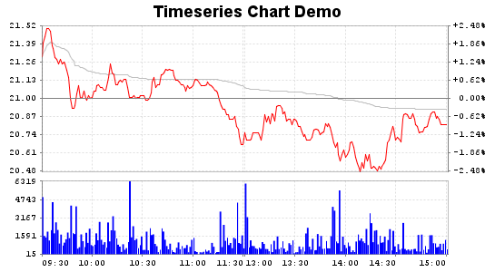

JStockChart Getting Started
1. System Requirement
JDK1.5 or later is required.
2. Download and Installation
You can download the latest JStockChart version from
http://code.google.com/p/jstockchart, now, the version is 0.4.2.
Unzips the JStockChart zip file(jstockchart-0.4.3.zip), and adds
jstockchart-0.4.3.jar, jcommon-1.0.16.jar and jfreechart-1.0.13.jar to
your classpath.
3. Example
There is a demo directory that contains a simple example application in
the JStockChart distribution, the example indicates how to use
JStockChart to create timeseries charts. Executes "run.sh"(Linux) or
"run.bat"(Windows) to run the example application. The key codes and
description are the followings:
public class TimeseriesChartDemo {
public static void main(String[] args) throws IOException {
// ...
// Creates a List instance that includes TimeseriesItem instance.
// Note: All of data must be in a same date.
List data = ...;
// Creates a SegmentedTimeline instance, the time scope is "09:30-11:30, 13:00-15:00".
SegmentedTimeline timeline = new SegmentedTimeline(
SegmentedTimeline.MINUTE_SEGMENT_SIZE, 1351, 89);
timeline.setStartTime(SegmentedTimeline.firstMondayAfter1900()
+ 780 * SegmentedTimeline.MINUTE_SEGMENT_SIZE);
// Creates TimeseriesDataset instance, the time step is one minute.
TimeseriesDataset dataset = new TimeseriesDataset(Minute.class, 1, timeline, true);
// Adds the TimeseriesItem list to the dataset.
dataset.addDataItems(data);
// Creates logic date axis. The central price to 21, the tick count is 9, the price label format is ".00".
CentralValueAxis fixedPriceAxis = new CentralValueAxis(new Double("21"), new Range(
dataset.getMinPrice().doubleValue(), dataset.getMaxPrice().doubleValue()),
9, new DecimalFormat(".00"));
// Creates price area.
PriceArea priceArea = new PriceArea(fixedPriceAxis);
// Creates logic volume axis. the tick count is 5, the price label format is "0".
FixedNumberAxis fixedVolumeAxis = new FixedNumberAxis(new Range(dataset
.getMinVolume().doubleValue(), dataset.getMaxVolume()
.doubleValue()), 5, new DecimalFormat("0"));
// Creates volume area.
VolumeArea volumeArea = new VolumeArea(fixedVolumeAxis);
// Creates timeseries area.
TimeseriesArea timeseriesArea = new TimeseriesArea(priceArea,
volumeArea, createFixedDateAxis(DateUtils.createDate(2008, 1, 1)));
// Creates JFreeChart instance by JStockChartFactory method.
// The chart title is "Timeseries Chart Demo"; doesn't generate legend.
JFreeChart jfreechart = JStockChartFactory.createTimeseriesChart(
"Timeseries Chart Demo", dataset, timeline, timeseriesArea, false);
...
// Create image file. The image format is PNG; the width is 545, the height is 300.
ChartUtilities.saveChartAsPNG(new File(imageFile), jfreechart, 545, 300);
}
// Specify logic date tick.
private static FixedDateAxis createFixedDateAxis(Date baseDate) {
FixedDateAxis fixedDateAxis = new FixedDateAxis(baseDate,
new SimpleDateFormat("HH:mm"));
fixedDateAxis.addDateTick("09:30", TickAlignment.START);
fixedDateAxis.addDateTick("10:00");
fixedDateAxis.addDateTick("10:30");
fixedDateAxis.addDateTick("11:00");
fixedDateAxis.addDateTick("11:30", TickAlignment.END);
fixedDateAxis.addDateTick("13:00", TickAlignment.START);
fixedDateAxis.addDateTick("13:30");
fixedDateAxis.addDateTick("14:00");
fixedDateAxis.addDateTick("14:30");
fixedDateAxis.addDateTick("15:00", TickAlignment.END);
return fixedDateAxis;
}
}
Executes the above example, you could see the following image:

4. Customising Chart
Because JFreeChart is very flexible, then you can get every chart
element, say Plot, from JFreeChart instance, and customise their
properties. Please see JFreeChart document and forum for more details.
Additionally, you can directly customise several properties when
creating JStockChart XXXArea instances. For example, you can set price
line color(PriceArea.setPriceColor); set average line color
(PriceArea.setAverageColor); ... Please see JStockChart API document for more
details.